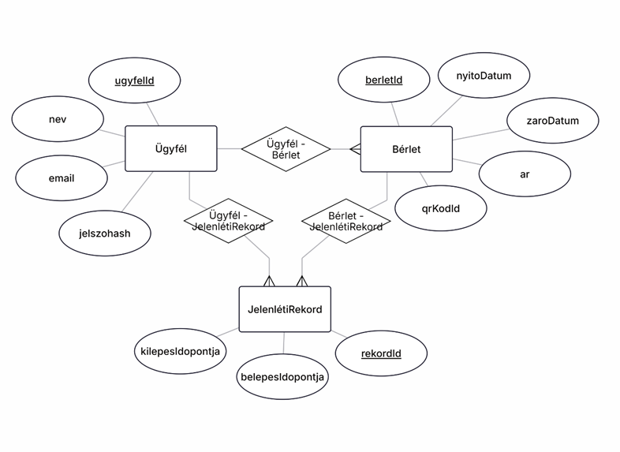
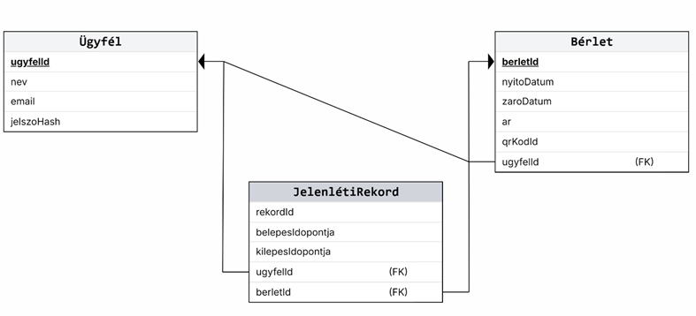

Csoport neve: StepByStep
Feladat sorszáma: H4
Feladat címe: Konditerem bérlet leltár – Rendszertervezés
Konditerem bérlet leltár – Rendszertervezés
Gyakorlatvezetõ:
Sátán Ádám
Csoport tagok:
|
Név |
Tankör |
Email cím |
|
Szalados Péter |
2BP2 |
|
|
Vincze Dániel Levente |
2BP1 |
|
|
Jeles Péter József |
2BP1 |
|
|
Pálóczy Makszim |
2BP1 |
|
|
Szilágyi Bálint |
2BI3 |
balszilagyi77@gmail.com |
Történet
|
Dátum |
Verzió |
Leírás |
Szerzõ |
|
2026.10.25 |
1.0 |
A korábbi dokumentumok alapján készült rendszerterv |
Szilágyi Bálint |
Contents
2.1. Recepciós felület (Staff-Facing Interface)
2.1.1. Felület célja és ergonómiai alapelvei
2.1.2. Képernyõelrendezés és funkcionális modulok
2.2. Ügyfél felület – Mobil- és Webalkalmazás (Client-Facing Interface)
2.2.1. Felület célja és felhasználói élmény (UX)
2.2.2. Képernyõk és funkcionális architektúra
2.3. Nyilvános Tájékoztató felület (Public Information Interface)
2.3.1. Felület célja és marketing szempontjai
2.3.2. Felépítés és tartalmi blokkok
3.1. Adatbázis-kezelõ kiválasztása
3.2.1. Fõbb entitások és attribútumok
3.2.2. Entitások közötti kapcsolatok (Cardinality)
3.3.1. Táblák fizikai struktúrája és mezõi
3.3.3 Relációs adatmodell diagram
4. A funkcionális modell kiegészítése
4.1. Kivételes folyamatok és hibahelyzetek kezelése
4.1.1. Hálózati kapcsolat megszakadása a beléptetés során (Offline Mûködési Mód)
4.1.2. Sikertelen online fizetés és tranzakciós visszagörgetés
4.2.1. Manuális azonosítás olvashatatlan vagy sérült QR-kód esetén
5. Részletes tervezés és implementációs elemek
5.1. Szoftverkomponensek és rétegzett osztálystruktúra
5.1.1. UzletiLogikaKezelo osztály
5.1.2. AdatbazisKezelo osztály
5.2. Biztonsági és hitelesítési modell
A jelen rendszertervezési dokumentum elsõdleges célja a Konditerem bérlet- és leltárkezelõ rendszer fizikai, architekturális, valamint részletes adat- és funkcionális modelljeinek bemutatása. Ez a specifikáció rögzíti az analízis fázisban meghatározott logikai követelmények konkrét megvalósítását, kitérve az adatbázis-kezelõ kiválasztására, a szemantikai és relációs adatmodellekre, az adatbázis-kezelõvel kapcsolatot tartó osztályok terveire, valamint a funkcionális folyamatok kiegészítésére. A dokumentum egységes szakmai alapot biztosít a fejlesztéshez, teszteléshez és üzemeltetéshez.
A kifejlesztendõ szoftver egy komplex, integrált vállalati és szolgáltatói információs rendszer, amely modernizálja a fitneszterem napi mûködését. Fõ feladatai közé tartozik az ügyfelek regisztrációja, a bérletek értékesítése és érvényesítése, a recepciós beléptetés automatizálása, a termék- és leltárkezelés, valamint a vendégek számára biztosított önkiszolgáló mobil- és webes funkciók kiszolgálása. A rendszer kiemelt figyelmet fordít a tranzakciós biztonságra, az adatok perzisztens tárolására és az offline mûködési opciókra.
A rendszer használói és fenntartói három fõ csoportra oszthatók:
A szoftverrendszer felhasználói felületeinek (User Interface - UI) megtervezése során az elsõdleges szempont a funkcionalitás, a hatékonyság, az ergonómia, valamint a rendszer különbözõ szerepköreihez való szigorú illeszkedés volt. Mivel a konditerem bérlet- és leltárkezelõ rendszere eltérõ környezetben és eltérõ felhasználói célokkal mûködik (front-office gyors ügyintézés, mobil/webes önkiszolgálás, valamint nyitott tájékoztatás), a felületi architektúrát három jól elkülöníthetõ, moduláris domainre bontottuk.
A tervezés során kiemelt figyelmet fordítottunk arra, hogy a felhasználói felületek reszponzívak, intuitívak és hibatûrõk legyenek. A felületek egységes vizuális nyelvrendszert (dizájn szisztéma, színhasználat, tipográfia, ikonográfia) alkalmaznak, garantálva a zökkenõmentes felhasználói élményt (UX) minden platformon.
A recepciós felület a konditerem munkatársainak (front-office személyzet) elsõdleges munkakörnyezete. A tervezés legfõbb prioritása a tranzakció-orientált gyorsaság és a minimális kognitív terhelés biztosítása volt. A recepción a csúcsidõszakokban másodpercek alatt kell beléptetni a vendégeket, bérleteket megújítani vagy kiegészítõ termékeket (pl. sportitalok, fehérjeszeletek) értékesíteni. Ennek érdekében a felület billentyûzet-orientált (hotkey támogatással) és gyors egérkezelésre optimalizált, elkerülve a mélyen egymásba ágyazott menürendszereket.
A recepciós felület egy osztott, többpaneles fõképernyõbõl áll, amely a következõ kulcsfontosságú modulokat foglalja magában:
Gyorsbeolvasó és Manuális Keresõzóna:
Beviteli mezõ: A képernyõ felsõ, kiemelt részén elhelyezkedõ input mezõ, amely alapértelmezetten mindig fókuszban van. Közvetlenül fogadja a fizikai hardveres QR-kód olvasóból érkezõ karakterláncot, de támogatja a manuális begépelést is (ügyfél neve, e-mail címe, telefonszáma vagy belsõ azonosítója alapján).
Azonnali szûrés: A gépeléssel párhuzamosan valós idejû auto-complete keresés fut az ügyfél-adatbázisban.
Ügyfél és Bérlet Státuszjelzõ Panel (kepernyoCim):
Vizuális állapotjelzés: A beolvasott kód vagy kiválasztott ügyfél alapján a felület domináns színe azonnal megváltozik:
· Zöld (Jóváhagyva): Érvényes bérlet, sikeres beléptetés.
· Sárga (Figyelmeztetés): Lejáróban lévõ bérlet (pl. utolsó alkalom vagy 3 napon belüli lejárat), de a belépés még engedélyezett.
· Piros (Elutasítva): Lejárt bérlet, nincs fennmaradó alkalom, vagy az ügyfél számlája zárolva van.
Részletes ügyféladatok: Megjeleníti az ügyfél fényképét, nevét, az aktív bérlet típusát, a fennmaradó alkalmak számát, a nyitó- és záródátumot (nyitodatum, zarodatum), valamint a korábbi belépési elõzményeket.
POS Értékesítési és Pénztár Modul:
Bérletértékesítés: Gyorsgombok az új bérletek (havi, korlátlan, 10 alkalmas, diák/nyugdíjas) azonnali kosárba helyezéséhez.
Termék- és Leltárkezelõ kosár: Barcode olvasóval vagy kategóriafás menübõl választható büfétermékek értékesítése.
Fizetési opciók: Egy kattintásos fizetési mód választás (Készpénz, Bankkártya/POS terminál, SZÉP kártya).
Nyomtatási integráció: Fizetés jóváhagyása után a rendszer automatikusan utasítást küld a fizikai nyomtatónak bizonylat vagy számla kiállítására (nyomtatBizonylat()).
Jelenléti és Teremkapacitási Monitor:
Valós idejû számláló az épületben/teremben tartózkodó vendégek létszámáról (belépett minusz kilépett rekordok alapján).
Gyorsakciós gombok a manuális kiléptetéshez vagy speciális vendégbejegyzések rögzítéséhez.
Az ügyféli felület a konditerem regisztrált tagjainak készült. Fõ célja az önkiszolgálás teljes körû biztosítása, a bérletvásárlási és beléptetési folyamatok digitalizálása, valamint az ügyfélelkötelezettség növelése. A felület hibrid technológiára épül: elérhetõ asztali/mobil böngészõbõl webalkalmazásként, valamint natív élményt nyújtó mobilalkalmazásként (iOS / Android).
Dashboard / Kezdõképernyõ:
Digitális Tagsági Kártya: A képernyõ központi elemként jeleníti meg a dinamikusan generált QR-kódot (qrKodId), amellyel a vendég a beléptetõkapuknál azonosítani tudja magát.
Gyorsáttekintõ kártyák: Az aktív bérlet típusa, érvényességi ideje, és a hátralévõ alkalmak száma látványos kördiagramon vagy progress bar-on ábrázolva.
Utolsó látogatások: Az utolsó 5 belépés idõpontjának listája.
Offline QR-kód Modul (qrKodLetoltes()):
Hálózategyenletességi védelem: A mobilalkalmazás a belépéshez szükséges kódokat és érvényesítési tokeneket helyileg, titkosított formában cacheli a készülék adattárolóján.
Offline beléptetési garancia: Hálózati kimaradás vagy gyenge mobilnet lefedettség esetén a felület automatikusan átvált az offline tárolt QR-kód megjelenítésére, biztosítva, hogy a vendég minden körülmény között be tudjon lépni a fitneszterembe.
Bérletvásárlás és Online Fizetési Képernyõ:
Bérletkatalógus: Kártyaalapú nézet a vásárolható bérlettípusokról, azok részletes leírásával, árával (ar) és felhasználhatósági szabályaival.
Kedvezményérvényesítés: Kedvezményigény beküldése (pl. diákigazolvány, nyugdíjas szelvény fényképes feltöltése), amely elbírálásig ideiglenes státuszt biztosít.
Integrált fizetési kapu: Biztonságos bankkártyás fizetési felület beágyazása (Stripe / Barion integráció), mentett kártyás fizetési opcióval.
Profil- és Beállítások Képernyõ:
Személyes adatok (nev, email) frissítése, jelszó módosítása (jelszoHash újragenerálása biztonságos csatornán).
Értesítési beállítások (bérlet lejárata elõtti push/e-mail figyelmeztetések).
Számlázási címek és fizetési elõzmények (korábbi vásárlások számláinak letöltése).
A nyilvános tájékoztató felület a rendszer belépési pontja a nem regisztrált látogatók, potenciális új ügyfelek és az érdeklõdõk számára. Elsõdleges célja a konditerem szolgáltatásainak bemutatása, az árak és feltételek átlátható közlése, valamint a regisztrációs konverzió növelése. A felület teljes mértékben reszponzív, SEO-optimalizált statikus/dinamikus webes felület.
Fõoldal és Hero Banner:
Képi és videós bemutató a konditerem felszereltségérõl, hangulatáról és szolgáltatásairól.
Közvetlen Call-to-Action (CTA) gombok: "Regisztráció", "Bérletvásárlás", "Kapcsolat".
Árlista és Bérlettípusok Nézet:
Részletes, összehasonlító táblázat a jegy- és bérletkonstrukciókról.
Egyértelmû feltüntetés az egyes bérletek érvényességi idejérõl, az igénybe vehetõ szolgáltatásokról (pl. szauna használat, csoportos órák) és az árakról (ar).
Diák-, nyugdíjas- és csoportos kedvezmények feltételeinek ismertetése.
Nyitvatartás és Kapcsolati Információs Panel:
Aktuális nyitvatartási rend: Hétköznapi, hétvégi és ünnepnapi nyitvatartási idõpontok dinamikus megjelenítése.
Teremfoglaltsági elõrejelzés: Statisztikai alapon számított vizuális grafikon a napon belüli várható csúcsidõszakokról (segítve a vendégeket a látogatás idõzítésében).
Interaktív térkép és megközelíthetõség: Beágyazott térkép modul, parkolási információk és tömegközlekedési útvonalak.
Kapcsolatfelvételi ûrlap: Üzenetküldési lehetõség az üzletvezetés vagy a recepció számára.
A konditerem bérlet- és leltárkezelõ rendszer mûködésének elengedhetetlen feltétele a hatékony, biztonságos és strukturált adatok perzisztens tárolása. Ez a fejezet részletesen bemutatja azokat az adatkezelési stratégiákat, technológiai döntéseket, szemantikai és relációs modelleket, valamint az adatbázis-kezelõvel közvetlen kapcsolatban álló szoftverkomponenseket, amelyek garantálják a rendszer üzembiztosságát, integritását és skálázhatóságát.
A perzisztencia biztosítása során kiemelt szempont volt, hogy a recepciós tranzakciók, az ügyfél-regisztrációk, a bérletérvényesítések, a jelenléti naplózások, valamint a készlet- és leltáradatok soha ne vesszenek el, és esetleges hálózati vagy áramkimaradás esetén is konzisztens állapotban maradjanak.
A rendszer implementációja során kritikus architekturális döntés volt a megfelelõ adatbázis-kezelõ rendszer (RDBMS) kiválasztása. A fitneszterem napi mûködése során keletkezõ adatok (felhasználói profilok, idõbélyeggel ellátott jelenléti rekordok, bérlet-típusok, pénzügyi tranzakciók) szigorúan strukturált relációkat mutatnak, amelyek megkövetelik a tranzakciós integritást és a relációs adatbázisok adta biztonságot.
A kiválasztott technológia: Microsoft SQL Server
A rendszer alapul szolgáló adatbázis-kezelõje a Microsoft SQL Server, amely az alábbi szakmai és technológiai indokok miatt került kiválasztásra:
ACID Kompatibilitás: Az atomicitás, konzisztencia, izoláció és tartósság (ACID) garanciája elengedhetetlen a bérletvásárlási és beléptetési tranzakciók során. Ha egy tranzakció (pl. bérletvásárlás és az azt kísérõ pénzügyi bizonylat rögzítése) közben hiba történik, a rendszer teljes mértékben visszagörgeti (rollback) a mûveletet, megakadályozva az adatok sérülését vagy az inkonzisztens állapotot.
Robusztus Tranzakciókezelés: Támogatja a komplex tranzakciós blokkokat, tárolt eljárásokat (Stored Procedures) és triggereket, amelyek tehermentesítik az üzleti logikai réteget a kritikus adatintegritási ellenõrzések alól.
Skálázhatóság és Teljesítmény: Hatékony indexelési mechanizmusai (B-fa struktúrák, clustered és non-clustered indexek) biztosítják, hogy a recepciós beléptetési kapuknál történõ QR-kód alapú keresések és érvényesítések milliszekundumok alatt lefusassanak, még csúcsidõben is, amikor nagyszámú lekérdezés érkezik egyszerre.
Integrálhatóság: Zökkenõmentes illeszkedést biztosít a modern backend technológiákkal és az Enterprise környezetekkel, megkönnyítve a biztonságos kapcsolatot a szoftver perzisztencia rétegével.
Alternatív megközelítések elvetése
NoSQL adatbázisok (pl. MongoDB): Bár a NoSQL rendszerek rugalmas sémakezelést és gyors írási teljesítményt nyújtanak, a konditerem rendszernél a táblák közötti szigorú relációk miatt a relációs adatbázis-kezelõ modell bizonyult a legmegfelelõbbnek az adatintegritás megõrzése érdekében.
Fájl alapú vagy in-memory tárolás: Tesztelési környezetben vagy kis prototípusoknál elegendõ lehetne, de éles üzemi környezetben alkalmatlan a több ezer naplózott esemény biztonságos, hosszú távú megõrzésére és a párhuzamos hozzáférések kezelésére.
A szemantikai adatmodell megtervezése és Entity-Relationship (ER) diagrammal való szemléltetése ennek a pontnak a feladata. A szemantikai modell célja a konditerem bérlet- és leltárkezelõ rendszer logikai entitásainak, azok attribútumainak, valamint a közöttük fennálló üzleti és strukturális kapcsolatoknak a független, absztrakt ábrázolása, amely független a fizikai implementációs részletektõl.
Ügyfél (Customer) entitás:
Felelõssége: A konditeremben regisztrált tagok alapvetõ adatait és az azonosításhoz szükséges paramétereket tárolja.
Attribútumok:
· ugyfelId (Elsõdleges kulcs / PK, long) – Az ügyfél egyedi azonosítója.
· nev (string) – Az ügyfél teljes neve.
· email (string) – Az ügyfél elektronikus levelezési címe, amely egyben egyedi azonosítóként is szolgál.
· jelszoHash (string) – A biztonságos hitelesítéshez használt titkosított jelszó.
Bérlet (Pass) entitás:
Felelõssége: Az ügyfelekhez kapcsolódó belépési jogosultságok, érvényességi idõk és offline azonosítók nyilvántartása.
Attribútumok:
· berletId (Elsõdleges kulcs / PK, long) – A bérlet egyedi azonosítója.
· ugyfelId (Idegen kulcs / FK, long) – A bérletet birtokló ügyfél azonosítója.
· nyitodatum (date) – A bérlet érvényességének kezdõ dátuma.
· zarodatum (date) – A bérlet lejárati dátuma.
· ar (int) – A bérlet bruttó ára.
· qrKodId (string) – A mobilalkalmazásban offline is cachelhetõ és érvényesíthetõ QR-kód azonosító.
JelenlétiRekord (Attendance Record) entitás:
Felelõssége: A recepciós kapun történõ belépések és kilépések naplózása.
Attribútumok:
· rekordId (Elsõdleges kulcs / PK, long) – A jelenléti esemény egyedi azonosítója.
· ugyfelId (Idegen kulcs / FK, long) – A belépõ ügyfél azonosítója.
· berletId (Idegen kulcs / FK, long) – Az érvényesítéshez használt bérlet azonosítója.
· belepesIdopontja (datetime) – A fizikai kapun történõ belépés pontos idõbélyege.
· kilepesIdopontja (datetime) – A kilépés idõbélyege (amennyiben a rendszer naplózza a távozást is).
Ügyfél és Bérlet (1 : N kapcsolat): Egy ügyfélnek az idõ múlásával több bérlete is lehet (egymást követõ vagy akár különálló típusú bérletek), de minden egyes bérlet pontosan egy adott ügyfélhez tartozik.
Ügyfél és JelenlétiRekord (1 : N kapcsolat): Egy ügyfél a látogatásai során több jelenléti rekordot generál, míg egy jelenléti rekord pontosan egy ügyfélhez köthetõ.
Bérlet és JelenlétiRekord (1 : N kapcsolat): Egy bérlettel több alkalommal is be lehet lépni a lejárat elõtt, így egy bérlethez több jelenléti rekord tartozhat, de egy belépési esemény pontosan egy érvényes bérlet felhasználásához kapcsolódik.

A relációs adatmodellre konvertálás folyamata és a relációs adatmodell leírása. A szemantikai modell entitásait és az azok közti relációkat a fizikai megvalósíthatóság érdekében áttértük a relációs adatbázis-kezelõ (Microsoft SQL Server) által támogatott táblasémákra. Az adatintegritás, a redundancia elkerülése és a hatékony lekérdezési teljesítmény érdekében a relációs adatmodell a harmadik normál formáig (3NF) lett normalizálva.
Ügyfél tábla
Leírás: A regisztrált felhasználók alapadatait tároló relációs tábla.
Mezõk:
· ugyfelId – BIGINT (PK, Identity, Not Null) – Egyedi azonosító, automatikusan növekvõ értékkel.
· nev – VARCHAR(100) (Not Null) – Az ügyfél teljes neve.
· email – VARCHAR(150) (Unique, Not Null) – Egyedi e-mail cím a bejelentkezéshez.
· jelszoHash – VARCHAR(255) (Not Null) – A titkosított jelszó kivonata.
Bérlet tábla
Leírás: Az ügyfelek bérleteit és érvényességi paramétereit nyilvántartó tábla.
Mezõk:
· berletId – BIGINT (PK, Identity, Not Null) – A bérlet egyedi azonosítója.
· ugyfelId – BIGINT (FK, Not Null) – Hivatkozás az Ugyfel tábla ugyfelId mezõjére.
· nyitodatum – DATE (Not Null) – Kezdõ érvényességi dátum.
· zarodatum – DATE (Not Null) – Lejárati dátum.
· ar – INT (Not Null) – A bérlet ára.
· qrKodId – VARCHAR(100) (Unique, Not Null) – Az offline validációhoz rendelt egyedi QR-kód karakterlánc.
JelenletiRekord tábla (JelenlétiRekord)
Leírás: A kapun történõ belépések tranzakciós naplója.
Mezõk:
· rekordId – BIGINT (PK, Identity, Not Null) – A rekord egyedi azonosítója.
· ugyfelId – BIGINT (FK, Not Null) – Hivatkozás az érintett ügyfélre.
· berletId – BIGINT (FK, Not Null) – Hivatkozás az érvényesítéshez használt bérletre.
· belepesIdopontja – DATETIME (Not Null) – A belépés pontos ideje.
· kilepesIdopontja – DATETIME (Null) – A kilépés ideje (ha releváns).
3.3.2. Adatintegritási kényszerek és Indexelés
Idegen kulcsok (Foreign Keys):
A Berlet.ugyfelId mezõ idegen kulcs kapcsolattal hivatkozik az Ugyfel.ugyfelId mezõre (ON DELETE CASCADE szabállyal, biztosítva az ügyfél törlésekor a kapcsolódó bérletek eltávolítását vagy inaktiválását).
A JelenlétiRekord.ugyfelId és JelenlétiRekord.berletId mezõk szintén idegen kulcsokként biztosítják, hogy csak létezõ ügyfél és bérlet párosítással történhessen beléptetési naplózás.

A rendszer alapvetõ mûködési folyamatai mellett elengedhetetlen a kivételes és alternatív feldolgozási lépések, valamint az egyes tevékenységek között szükséges adatáramlások szigorú dokumentálása. Ez a fejezet bemutatja azokat a rendkívüli üzleti eseményeket, hibakezelési mechanizmusokat és alternatív útvonalakat, amelyek garantálják a rendszer robusztusságát és folytonosságát éles üzemben.
Trigger: A recepciós beléptetõkapunál lévõ kliensalkasmazás elveszíti a kapcsolatot a központi MS SQL Server adatbázissal.
Feltétel és elõzmény: A rendszer elõzetesen szinkronizálta az aktív bérlettel rendelkezõ ügyfelek tokenjeit a helyi gyorsítótárba (local cache).
Feldolgozási lépések:
1. A recepciós vonalkód-olvasó beolvassa a vendég QR-kódját (qrKodId).
2. Mivel a központi adatbázis nemérhetõ el, a kliensalkalmazás a helyi titkosított memóriában vagy SQLite adatbázisban ellenõrzi a bérlet érvényességét (zarodatum és fennmaradó alkalmak).
3. Ha a bérlet érvényes, a kapu vezérlõegysége fizikai nyitási jelet kap, és a belépési esemény helyi ideiglenes naplófájlba íródik.
4. A hálózati kapcsolat helyreállását követõen a háttérben futó szinkronizációs szolgáltatás automatikusan feltölti a lezáratlan jelenléti rekordokat (JelenlétiRekord) a központi adatbázisba, biztosítva az adatintegritást.
Trigger: Bérletvásárlás közben a külsõ fizetési gateway (pl. banki API) elutasítja a tranzakciót, vagy idõtúllépés (timeout) történik.
Feldolgozási lépések:
1. Az üzleti logikai réteg elfogja a fizetési hiba 4xx/5xx HTTP kódját.
2. Az adatbázis-kezelõ (AdatbazisKezelo) tranzakciós szinten végrehajtja a visszagörgetést (ROLLBACK TRANSACTION), megakadályozva a függõben lévõ bérlet aktiválását.
3. A felhasználói felületen hibaüzenet jelenik meg, és a rendszer felajánlja az adatok újbóli megadását vagy más fizetési mód (pl. készpénz) választását.
Trigger: A vendég okostelefonjának kijelzõje összetört, lemerült, vagy a QR-kód nem olvasható le a hardveres szkennerrel.
Feldolgozási lépések:
1. A recepciós a szoftver gyorskeresõ mezõjébe begépeli az ügyfél nevét vagy e-mail címét.
2. A rendszer lekérdezi a találatokat, és listázza az azonosított ügyfeleket.
3. A recepciós kiválasztja a megfelelõ profilt, ellenõrzi a képernyõn megjelenõ fényképes igazolást, majd manuális jóváhagyási (Override) gombbal nyitja meg a kaput.
4. A rendszer a JelenlétiRekord táblában rögzíti a belépést, megjelölve, hogy azt manuális recepciós jóváhagyással végezték.
Ez a fejezet részletezi azokat a technológiai összetevõket, osztályokat, architektúra-elemeket és adatszerkezeteket, amelyek az implementáció alapját képezik.
A rendszer objektumorientált szemléletben, C# nyelven, az ASP.NET Core keretrendszer alkalmazásával épül fel. A fõbb vezérlõ és perzisztencia-osztályok az alábbi felelõsségi körökkel bírnak:
Felelõssége: A bérletellenõrzési algoritmusok, a beléptetési jogosultságok validálása és az üzleti szabályok betartatása.
Fõbb metódusok:
· ellenorizBerlet(qrKodId: string): bool – Validálja a bérlet státuszát a megadott kód alapján.
· rögzitBelepes(ugyfelId: long, berletId: long): void – Elindítja az adatbázis-tranzakciót és rögzíti a látogatást.
Felelõssége: Az MS SQL Server adatbázissal való kommunikáció, a SQL parancsok, tárolt eljárások (Stored Procedures) futtatása.
Fõbb metódusok:
· mentesAdat(entitas: Object): boolean – Rekordok perzisztálása az adatbázisban.
· lekerdezAdat(sqlKereses: string): List<Object> – SQL lekérdezések végrehajtása és adatok visszaadása.
Jelszókezelés: Az Ugyfel táblában tárolt jelszoHash mezõ kizárólag egyirányú, sózott kriptográfiai kivonatolással (BCrypt / PBKDF2) kerül tárolásra. A nyers jelszavak soha nem jelennek meg a memóriában vagy a logfájlokban.
Munkamenet-kezelés: A kliens és a szerver közötti kommunikáció titkosított HTTPS csatornán zajlik, JWT (JSON Web Token) alapú hitelesítéssel, biztosítva a jogosultság-alapú hozzáférést (Recepciós vs. Ügyfél szerepkörök).